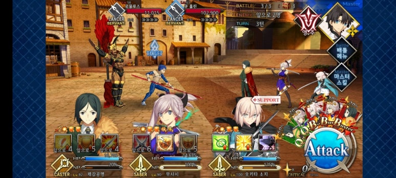

페그오늘 2026-10-05T20:22:23+09:00 ? 보존 버전 1 네이버 원문 보기 ↗  열심히 캐는 중입니다. 페그오 매일 돌리는 칼데아 마스타... 그리고 최근 구름이 보기 좋네요. 네네. 구름 아래에 그늘진 산의 모습 정말 좋아합니다. 밝은 것과 어두운 것의 조화란... 음? 다음글중복이 오기 전에.이전글소소한 페그오 일지 + QP 퀘스트 공략